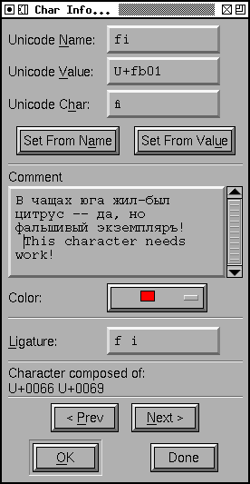
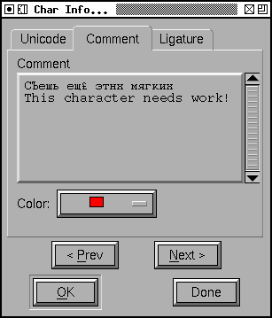
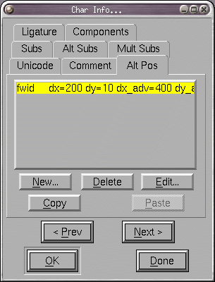
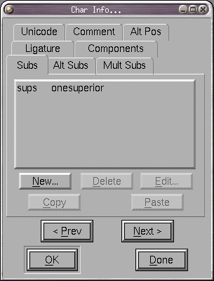
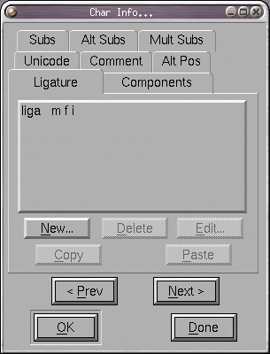
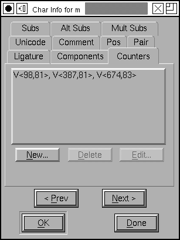
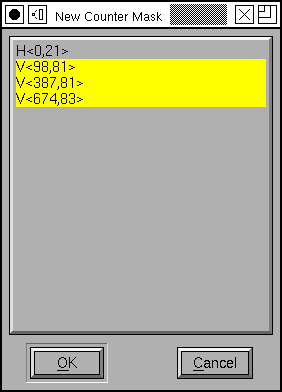
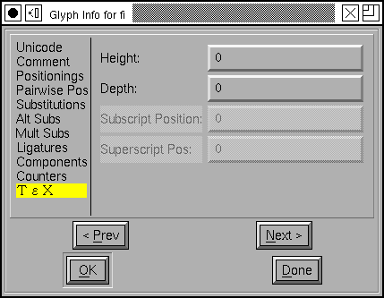

Glyph Info
 Glyph Info
- Encoding and Unicode data
- Glyph Comment
- Simple Glyph Positioning (GPOS)
- Pair-wise Glyph Positioning (kerning) (GPOS)
- Glyph Simple Substitution (GSUB, morx)
- Glyph Alternate Substitution (GSUB)
- Glyph Multiple Substitution (GSUB)
- Glyph Ligature Substitution (GSUB, morx)
- Components
- Counter Masks
- TeX & Math
- Variants
This dialog allows you to set the name and unicode encoding of a given glyph. If you know the name of the glyph then FontForge can tell you the encoding (if you press Set From Name), similarly if you know the encoding then FontForge can tell you the name.
The name field contains a pull down list with (possibly) several synonyms for the name of this unicode code point.
The Glyph class field is for the opentype 'GDEF' table. You can usually leave
it set to automatic. FontForge will then figure out the class, and whether
it should be output into GDEF. You can see what FontForge does in
View->Show ATT.
You
can assign an arbitrary (unicode) comment to the glyph.
Simply type any text into this field. The comment is for your use, it will
not go into any generated fonts. You may also assign a color to a glyph to
make it stand out in the font view.
There are 6 separate sub-dialogs to help you edit the lookups of the GPOS and GSUB tables (some of these data can be converted into various of Apple's AAT tables, particularly 'morx'). Lookups and their subtables are described in some detail here, and may be manipulated and created with the Element->Font Info commmand.
The first of sub-dialogs is the alternate position pane which allows you to associate certain modifications to a glyph's metrics with a feature in the GPOS table.
In the example at right the first lookup subtable (which is associated with the Scientific Inferiors feature) will move the y position of the glyph down by 900 em-units, while the second subtable will move it down by 560 em-units. Positioning subtables can also move glyphs horizontally and can adjust the horizontal and vertical advances of the glyph. If you have configured FontForge to support them you can also add device tables for pixel level corrections to these adjustments. Most subtables will use only a few of the possibilities open to them and FontForge generally hides unused columns -- but if you want to see them just turn off [*] Hide Unused Columns.
A new entry in the list may be created by pressing the <New> button and a popup menu will appear with all possible lookup subtables you could add data to.
The pairwise positioning sub-dialog allows you to
change the positions of two glyphs when they occur next to one another --
better know as kerning. I think the Metrics View
provides a better place to do kerning, but you can do it here if you
wish.
 A simple substitution replaces one glyph with another. Here the glyph "one" has a series of substitutions to various glyphs depending on what lookup subtable is invoked.
The multiple and alternate substitution sub-dialogs are very similar to this one except that they can take multiple glyph names. In a multiple substitution subtable each glyph is replaced by several other glyphs (sort of the reverse of a ligature), while in the alternate substitution sub-dialog each glyph is to be replaced by exactly one glyph from a list and the user is to be given a choice as to which glyph is to be chosen.
"Hello Rabbit," he said, "is that you?" "Let's pretend it isn't," said Rabbit, "and see what happens."
Winnie-The-Pooh
A. A. Milne, 1926
 The ligature pane allows you to tell FontForge that the current glyph is a ligature composed of several other glyphs. FontForge will sometimes be able to fill this in with the right default value, but not always. The value should be a list of postscript glyph names separated by spaces. If a glyph may be viewed as two different ligatures then they may both be specified in different lines. For example "ffi" may be viewed as a ligature of "f" "f" and "i" or of "ff" and "i".

In complicated Asian glyphs, postscript has a mechanism for controlling the
width of counters between stems. These are called
counter mask
hints.
In Latin, Cyrillic, Greek fonts only glyphs like "m" are allowed to have
counter masks, and only in very controlled conditions. See the description
of counter masks.
Some glyphs (ligatures, accented glyphs, Hangul
syllables, etc.) are built up out of other glyphs (at least according to
unicode). This pane of the dlg shows the components that Unicode says make
up the current glyph, if those components are in the font then you can use
FontForge's Element->Build->Build Accented or
Element->Build->Build Composite commands to create the current
glyph. The information displayed here is informative only, you may not change
this field directly (it changes when you change the unicode value or glyph
name associated with this glyph).
 The
TeX pane allows you to specify glyph specific information
used in TeX tmf files. The height and depth fields are often the same as
the glyph's bounding box (if you don't fill these in that's what fontforge
will use by default), but they should be corrected for optical distortion,
so in glyphs like "o" these fields should be clipped to the x-height and
baseline (ff will attempt to do this when you press [Guess]).
The Italic correction is used by both TeX and the new OpenType MATH table. In the MATH table you may also specify a device table to correct rounding errors at small pixel sizes.
The Top Accent Position is another concept from the MATH table and provides a horizontal position over which to position math accents (vertical positioning is done somewhere else).
For extremely tall glyphs the normal mechanisms for positioning superscripts
are inappropriate and the [] Is Extended Shape checkbox alerts
the typesetter to this fact.
The [Math Kerning] button brings up the Math
Kerning dialog which gives you fine control over the placement of subscripts
and superscripts near the glyph.
Variants
 There
are two panes for variants, one for glyphs that get longer horizontally and
one for glyphs that get longer vertically.
There
are two panes for variants, one for glyphs that get longer horizontally and
one for glyphs that get longer vertically.
In mathmatical typesetting the size of a parenthesis will depend on the vertical size of the formula within that parenthesis. As formulae can be arbetarily complex they may be arbetarily tall, so there needs to be a way of making arbetarily big parentheses. This pane provides two mechanisms.
At the top you may specify a list of prebuilt glyphs each a little bigger than the one before.
Underneath you may specify a way of building really big parentheses by combining
several component glyphs. See the description of this in the
MATH Info dialog for more
details.
The Next and Prev buttons allow you to move from one glyph to the next (if, for example, you need to enter encodings for a range of glyphs).
The Done (or Cancel) button only Cancels work in the current glyph. If you
have already used Next or Prev then those earlier changes will not be
cancelled.
See Also: